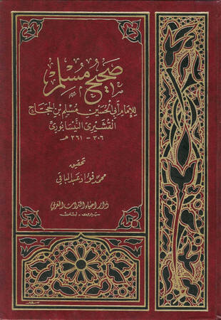

صحيح مسلم - ت عبد الباقي
مسلم
(d. 261 AH)
Publisher: مطبعة عيسى البابي الحلبي وشركاه، القاهرة
Other editions
- صحيح مسلم - ط التركية (ط التركية)
Details
- الكتاب
- صحيح مسلم
- المؤلف
- أبو الحسين مسلم بن الحجاج القشيري النيسابوري (٢٠٦ - ٢٦١ هـ)
- المحقق
- محمد فؤاد عبد الباقي [ت ١٣٨٨ هـ]
- الناشر
- مطبعة عيسى البابي الحلبي وشركاه، القاهرة
- (ثم صورته دار إحياء التراث العربي ببيروت، وغيرها)
- عام النشر
- ١٣٧٤ هـ - ١٩٥٥ م
- عدد الأجزاء
- ٥ (متسلسلة الترقيم) (الأخير فهارس)
- ترقيم الكتاب موافق للمطبوع
- صفحة المؤلف
- مسلم
About the author
Arabic original
الإمَام مُسْلِم (٢٠٤ - ٢٦١ هـ = ٨٢٠ - ٨٧٥ م)
مسلم بن الحجاج بن مسلم القشيري النيسابورىّ، أبو الحسين
• حافظ، من أئمة المحدثين.
• ولد بنيسابور، ورحل إلى الحجاز ومصر والشام والعراق، وتوفي بظاهر نيسابور.
• أشهر كتبه (صحيح مسلم - ط) جمع فيه اثني عشر ألف حديث، كتبها في خمسة عشر سنة، وهو أحد الصحيحين المعول عليهما عند أهل السنة، في الحديث، وقد شرحه كثيرون.
• ومن كتبه (المسند الكبير) رتبه على الرجال
• و (الجامع) مرتب على الأبواب
• و (الكنى والأسماء - خ) في الظاهرية بدمشق (مجاميع ٦) في نحو ٣٥ ورقة، كتبت سنة ٤٧١ (ذكرها الميمني) وفي الظاهرية أيضا (٢٠٢) وصف جزء من الكنى والأسماء في ١٢٠ ورقة، في المجموع ١١ (٤١) [طُبع]
• وله (الأفراد والوحدان - ط)
• و (الأقران)
• و (مشايخ الثوري)
• و (تسمية شيوخ مالك وسفيان وشعبة)
• و (كتاب المخضرمين)
• و (كتاب أولاد الصحابة)
• و (أوهام المحدثين)
• و (الطبقات)
• و (أفراد الشاميين)
• و (التمييز)
• و (العلل) (١).
_________
(١) تذكرة الحفاظ ٢: ١٥٠ وتهذيب ١٠: ١٢٦ وابن خلكان ٢: ٩١ وفهرسة ابن خير ٢١٢ وتاريخ بغداد ١٣: ١٠٠ وفيه أن مسلما حذا حذو البخاري في صحيحه، ولما ورد البخاري نيسابور في آخر أمره لازمه مسلم. و ١٣ - ٤١٢ Princeton وطبقات الحنابلة ١: ٣٣٧ والبداية والنهاية ١١: ٣٣ ومعجم المطبوعات ١٧٤٥ وهادي المسترشدين إلى اتصال المسندين ٣٢٧ و Brock ١: ١٦٦ (١٦٠) S ١: ٢٦٥. وانظر فهرس المؤلفين ٢٩٩.
نقلا عن: «الأعلام» للزركلي [مع إضافة بين معقوفين]
- التمييز لمسلم
- الكنى والأسماء - للإمام مسلم
- المنفردات والوحدان
- صحيح مسلم - ت عبد الباقي
- صحيح مسلم - ط التركية
Shares most with
- البحر المحيط الثجاج في شرح صحيح الإمام مسلم بن الحجاج 5,203
- منة المنعم في شرح صحيح مسلم 5,188
- توفيق الرب المنعم بشرح صحيح الإمام مسلم 5,130
- صحيح مسلم - ط التركية 5,129
- إكمال المعلم بفوائد مسلم 4,925
- الكوكب الوهاج شرح صحيح مسلم بن الحجاج 4,855
- المسند الموضوعي الجامع للكتب العشرة 4,641
- فتح المنعم شرح صحيح مسلم 4,573
- المسند المصنف المعلل 3,907
- جامع الأصول 3,814
- الجمع بين الصحيحين لعبد الحق 3,738
- الجامع الكامل في الحديث الصحيح الشامل المرتب على أبواب الفقه 3,660
Also in the catalogue
 صحيح مسلم -ت. محمد فؤاد عبد الباقي- طبعة الحلبي
صحيح مسلم -ت. محمد فؤاد عبد الباقي- طبعة الحلبي
مسلم بن الحجاج بن مسلم القشيري النيسابوري
صحيح مسلم -ت. محمد فؤاد عبد الباقي- طبعة الحلبي
صحيح مسلم -ت. محمد فؤاد عبد الباقي- طبعة الحلبي
مسلم بن الحجاج بن مسلم القشيري النيسابوري
 صحيح مسلم- ت. محمد فؤاد عبد الباقي
صحيح مسلم- ت. محمد فؤاد عبد الباقي
مسلم بن الحجاج بن مسلم القشيري النيسابوري
صحيح مسلم- ت. محمد فؤاد عبد الباقي
صحيح مسلم- ت. محمد فؤاد عبد الباقي
مسلم بن الحجاج بن مسلم القشيري النيسابوري
Contents